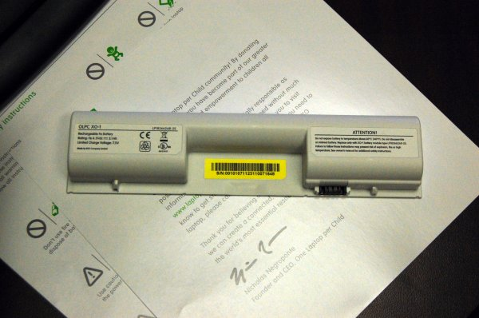
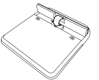
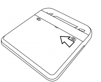

شحن البطارية
استعمال طاقة البطارية
جهاز XO بحاجة الى استخدام البطارية، او يمكن ربط الجهاز مباشرة بمقبس الكهرباء على الحائط. ويمكنه استخدام مصدرا الطاقة معا. تحتوي البطارية عندما تقوم بالحصول عليها على قدر معين من الطاقة.قم باتباع التعليمات التالية لكي تضع البطارية وتقوم بشحنها.

هذه هي بطارية. جهاز XO البطارية تركب في الجزء الخلفي للجهاز.
تركيب البطارية
- قم بتركيب البطارية بطريقة أفقية.
- ثم ادفع البطارية الى مكانها المخصص.


شحن البطارية
- تأكد من أن البطارية مرتبطة بالجهاز.
- قم بتركيب خيط الطاقة في الجهاز.
- ثم ركب الجزئ الآخر في أقرب مقبس للكهرباء.
متى تقوم بشحن البطارية؟
توجد ايقونة البطارية في أسفل الشاشة وتمتلئ بلون يظهر قدر الطاقة المتوفرة في البطارية. قم بتحريك مؤشر الفأرة لمعرفة مستوى الطاقة الموجودة. عندما تقوم بشحن البطارية يتحول ضوء بطارية قرب زر الطاقة (على شكل البطارية) الى اللون الاصفر، وتحول إلى أخضر عندما تكون البطارية مشحونة بالكامل. الضوء الأحمر يدل على أن البطارية تحتوي على قدر قليل من الطاقة، وعليك القيام بشحنها بسرعة.
المشاكل وحلولها
إذا كان مستوى طاقة البطارية منخفض للغاية أثناء حصولك على الجهاز فلن تستطيع تشغيله. قم باخراج البطارية و شغل الجهاز انطلاقا من من مقبس الكهرباء مباشرة. عندما يشتغل الجهاز قم بعد ذلك بتركيب البطارية. ستقوم بالشحن بعد ذلك بطريقة عادية.
للمزيد من المعلومات حول البطارية يمكنكم زيارة الصفحة التالية:
http://wiki.laptop.org/go/XO_Troubleshooting_Battery